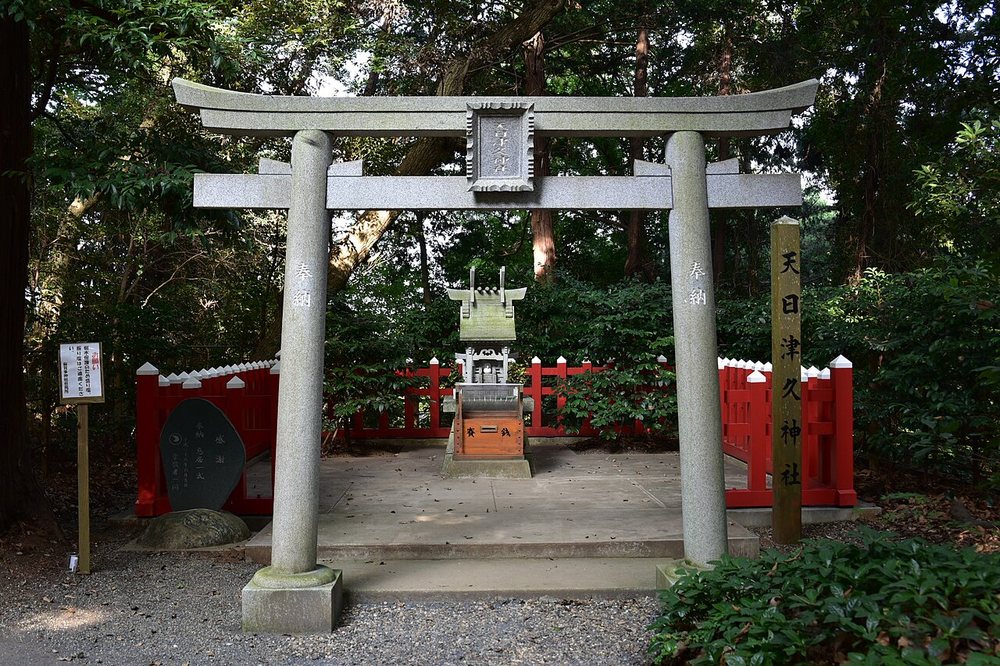

Chiba
日月神示と千葉県
日月神示は、昭和19年（1944年）に千葉県で書かれ始めたとされています。 書いたのは、岡本天明（おかもと てんめい）。場所は、いまの成田市にある麻賀多神社（まかたじんじゃ）です。 このページでは、千葉県とのつながりを、年表と場所でまとめます。
まず、ひとことで
昭和19年6月10日、岡本天明が千葉県の神社を参りました。そのとき、自分の意思とは別に手が動いて文字を書く「自動書記」が始まったとされます。 これが日月神示（ひふみ神示）の始まりです。
そののち天明は、同じ場所の近くに移り住み、約7年を過ごしたとされます。神示は昭和36年までのあいだに、39巻・979帖にまとめられています。
年表
- 千葉県印旛郡公津村台方（いまの成田市台方）で、岡本天明が天日津久神社（あまひつくじんじゃ）を参拝。麻賀多神社の社務所で自動書記が始まり、最初の神示（第一帖・第二帖）が書かれたとされます。
- 天明が、千葉県の台方に移り住みます。
- 麻賀多神社の近くで、約7年を過ごしたとされます。
- 岐阜県に移り、千葉県を離れます。
ゆかりの場所
麻賀多神社 本宮（台方）
- 所在地
- 千葉県成田市台方1番地
- 祭神
- 和久産巣日神（わくむすひのかみ）
- 伝承
- 景行天皇42年（西暦113年）に日本武尊が訪れたことが、起こりと伝えられます。
- 神示との縁
- 昭和19年6月10日、この社務所で最初の神示が書かれたとされます。
天日津久神社（本宮の境内）

- 位置づけ
- 麻賀多神社本宮に属する神社です。資料によって「摂社」「末社」と書き分けられています。
- 神示との縁
- 岡本天明が参拝し、自動書記が始まるきっかけになったとされる神社です。
麻賀多神社 奥宮（船形）
- 所在地
- 千葉県成田市船形834番地
- 祭神
- 稚日霊命（わかひるめのみこと）
- 伝承
- 応神天皇20年に、印旛国造（いんばのくにのみやつこ）の伊都許利命（いつこりのみこと）が社殿を造ったと伝えられます。
読むときの注意
・ここに書いたのは、公開されている資料に基づく整理です。「とされます」「と伝えられます」と書いた部分は、資料や伝承によって説が分かれることがあります。
・神社を訪ねるときは、神社の案内や参拝の作法に従ってください。
・神示そのものの読み方は、各帖の解説ページで、本文と解説を分けて紹介しています。